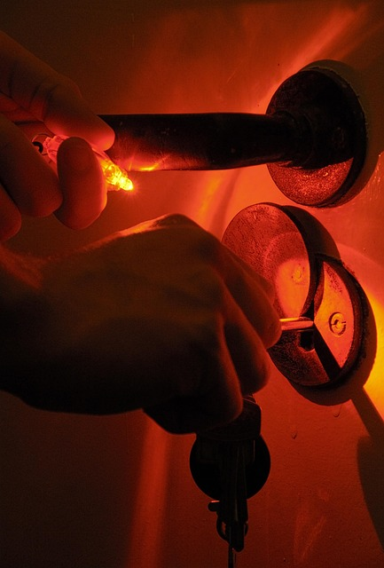
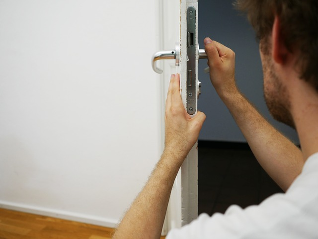
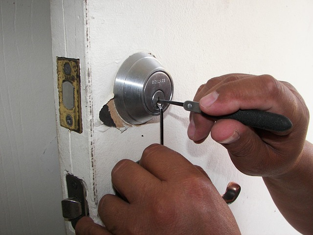

Çilingir: gece çağrısı kaçmasın
Üç ayrı yerleşim, aynı çalışan araçlar: müşteri konumunu paylaşır, en yakın ustanın tahmini varış süresini görür; kapı tipini seçer, fiyat aralığını öğrenir; talebi WhatsApp'tan tek dokunuşla iletir. İşletmeler kurgusaldır; usta ve fiyat verileri örnektir.

Vitrin · koyu, tam ekranKilit AtölyesiGece acil çağrı odaklı; konumdan "~X dk" ve kapı tipi fiyatı.

Dergi · krem, sütunluNöbetçi AnahtarHizmetler, semt seçimi, fiyat aralıkları ve sık sorulanlar.

Uygulama · sekmeliAçıkKapıTelefonda uygulama gibi; usta durumu ve yol takibi.
Pakette:
Fotoğraflar temsilî stoktur. Kendi adınız, ustalarınız ve fiyatlarınızla yayına alınır.
- Konum ya da semt → en yakın usta, tahmini süre
- Kapı tipi (çelik, oto, kasa, kilit değişimi) → fiyat aralığı ve işlem süresi
- WhatsApp asistanı: konum + kapı tipini sorar, ustaya özet düşer
- Google İşletme Profili düzenleme: 7/24 saat, hizmet bölgeleri, fotoğraflar